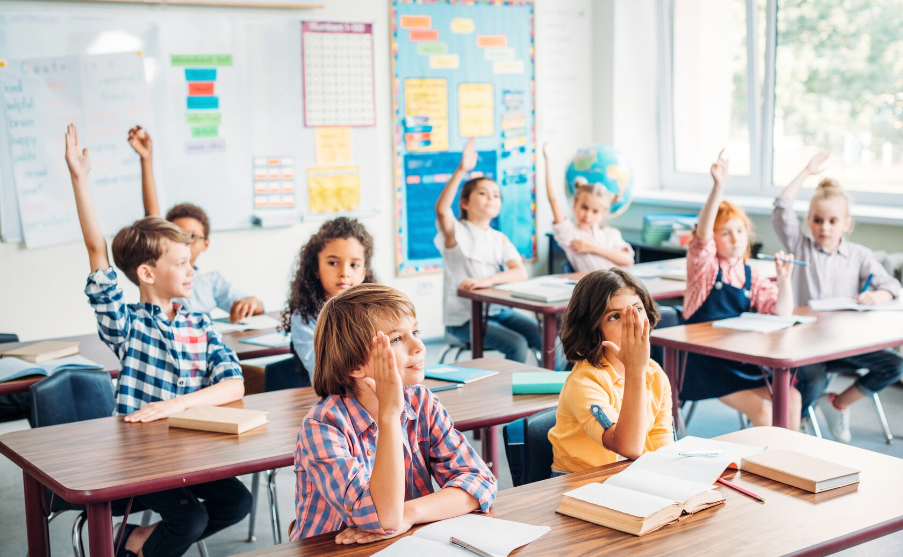

Гуманно-личностная педагогика
История развития образовательной системы «Школа 2100»
Образовательная система «Школа 2100» - первый и единственный в России и странах СНГ современный опыт создания целостной образовательной модели, последовательно предлагающей системное и непрерывное обучение детей от младшего дошкольного возраста до окончания старшей школы. Научные руководители - А.А.Леонтьев, Ш.А.Амонашвили, Д.И.Фельдштейн, С.К.Бондырева.
В учебниках программы «Школа 2100» заложен единый дидактический принцип минимакса. Его суть заключается в том, что учебные материалы включают не только обязательный минимум знаний, который должны освоить все учащиеся под руководством учителя, но и дополнительные задания. Принцип минимакса помогает учитывать различия между детьми: все ребята разные, и нельзя подстраивать обучение только под сильного или слабого ученика. Благодаря гибкой системе ученик вместе с учителем выбирает собственный максимум. Это и есть индивидуальный подход на практике.